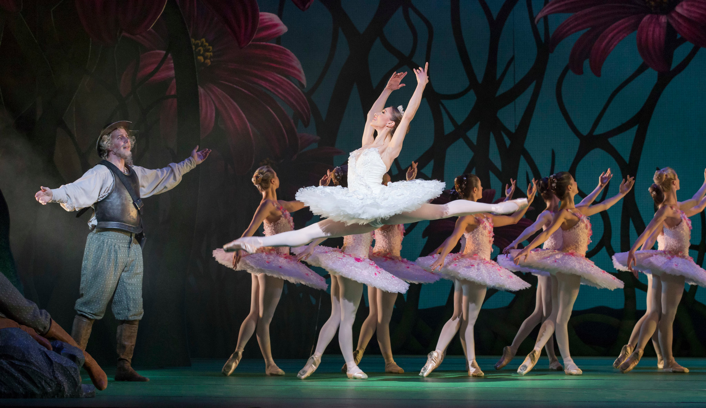
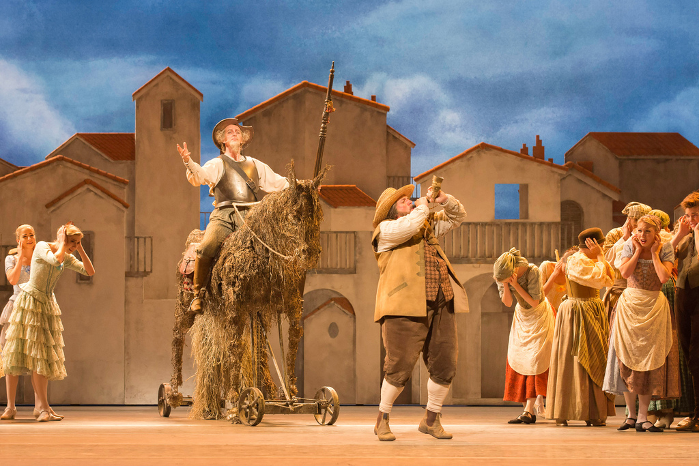
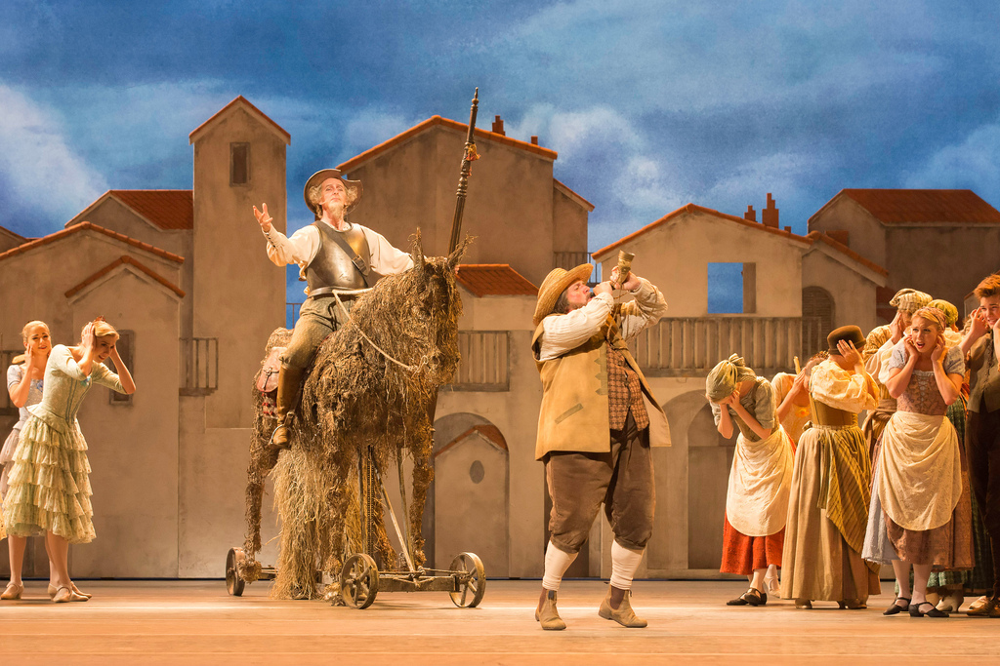

A obra narra as aventuras e desventuras de Dom Quixote,
um homem de meia idade que resolveu se tornar
cavaleiro andante depois de
ler muitos romances de cavalaria.
Providenciando cavalo e armadura, resolve lutar para provar seu amor por Dulcineia
de Toboso, uma mulher imaginária.
Baseado no livro clássico Dom Quixote de La Mancha,
de Miguel Cervantes, é um balé de quatro atos, e teve
sua primeira adaptação para o balé em 1740,
na Áustria por Franz Hilverding, depois com Jean Georges
Noverre em 1768,
também em Viena, com música de Josef Starzer.
 
